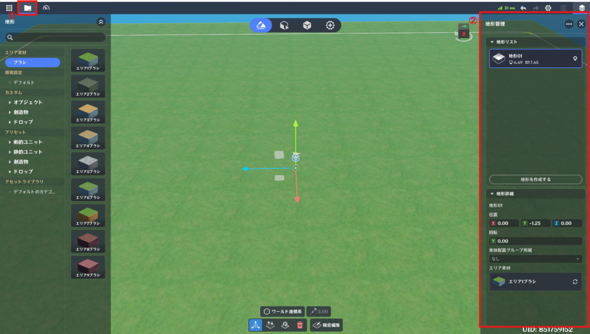
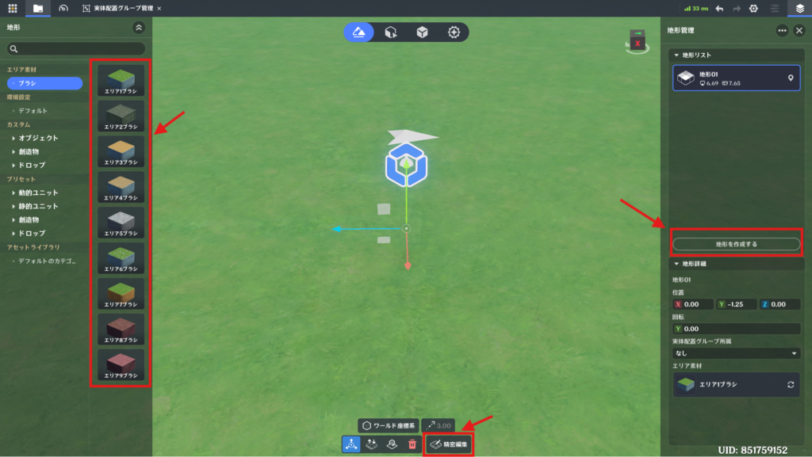
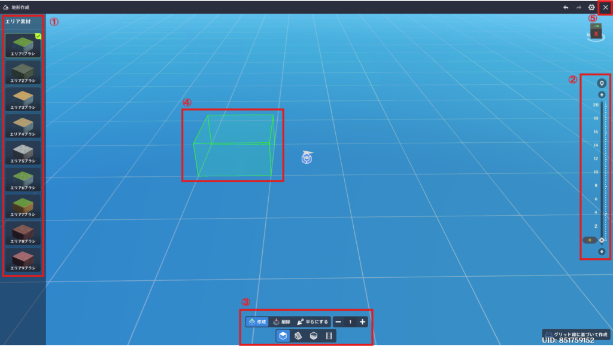
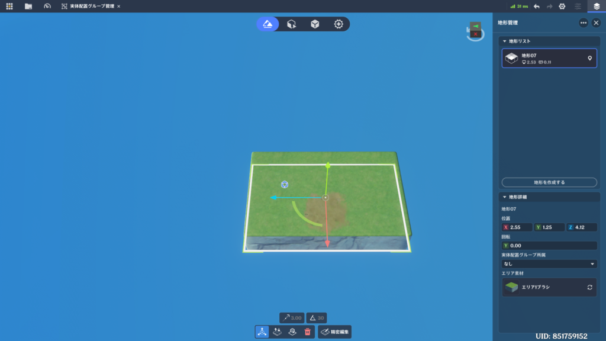
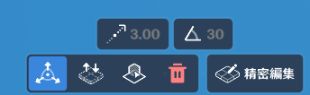
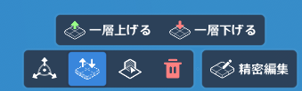
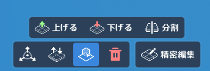
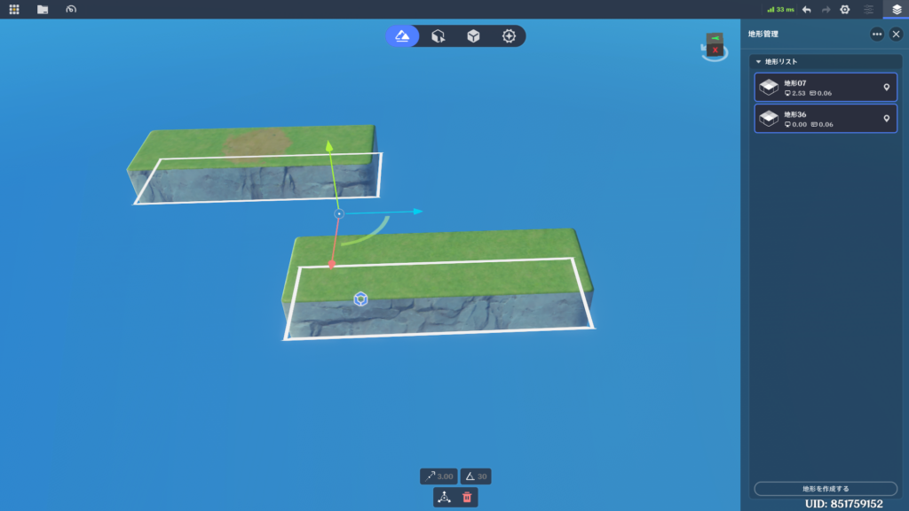
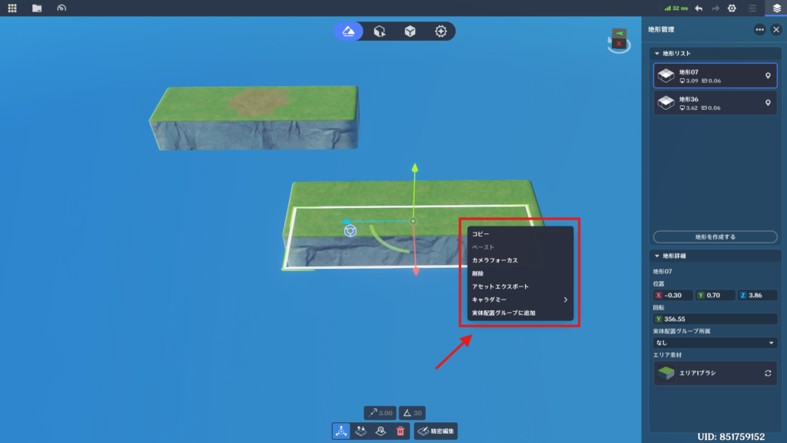

地形編集モード
地形編集を使って、ステージ内にシーン効果を作成します。⭐1.地形編集
🌸1.開き方
上部タブバーの一番左のボタンから「地形編集」を開きます。
🌸2.初期作成
ステージ作成時、ワールド座標(0,0,0)を基準に100×100の地形が自動的に生成されます。🌸3.編集単位
地形編集の最小単位は1マス分のエリアです。
🌸4.メインインターフェース

(1) アセット欄
左上のフォルダボタンで開閉を切り替えます。
作成するアセットを選択します。
アセットリスト
右上のひし形が3枚重なっているアイコンで開閉を切り替えます。
ステージ内の地形を管理します。
地形リスト
地形詳細
編集モードが無効の時に利用できます。
1つまたは複数のアイテムを選択します。
現在の選択内容に応じて、ツールバーの表示が切り替わります。
選択可能なコンテンツと選択機能
⭐2.地形作成
🌸1.起動方法

作成モードに入るにはいくつかのルートがあります。
・エリア素材のブラシを選択した後、右下に表示される「グリッド線に基づいて作成」ボタンを押下
・地形管理から「地形を作成する」をクリックした後、右下に表示される「グリッド線に基づいて作成」ボタンを押下
・地形を選択し、「精密編集」ボタンを押下
🌸2.機能

①エリア素材で素材を選択し、右側の②高さスケールでキャンバスの高さを設定します。
次に、③下部ツールバーでブラシモードを選択し、④ポインターを使って現在の位置にペイントして、エリアを作成します。
右上の⑤✕ボタンをクリックすると、描画した内容に基づいて地形が生成されます。
(1) エリア素材次に、③下部ツールバーでブラシモードを選択し、④ポインターを使って現在の位置にペイントして、エリアを作成します。
右上の⑤✕ボタンをクリックすると、描画した内容に基づいて地形が生成されます。
ブラシの地形素材をクリックすることで、ブラシの地形素材を切り替えることができます。
(2) 高さスケール
地形生成に使用するキャンバスの高さを制御します。
スライダーを動かしたり、上下ボタンをクリックしたり、スライダーの数値を直接入力することでキャンバスの高さを変更できます。
※上下ボタンは高さを20単位で増減させます。
(3) 下部ツールバー
一番下の4つのアイコンでブラシモードの切り替えをすることができます。
左から、「エリア編集」「傾斜編集」「水域編集」「道路編集」になります。
エリア編集
斜面編集 ※既に地形が存在する領域のみ選択できます
矢印は設定した方向に基づいて高い方の端を示します。
水域編集 ※地形または水域上のみ選択できます
道路編集 ※地形上のみ選択できます
タップすることで、現在位置に設定したブラシ効果を適用します。
ドラッグすることで、カーソルが通過した位置に、設定したブラシ効果を適用します。
(5) 描画終了
キャンパス上に作成された内容を基に地形を生成します。
つながっている地形はすべて1つの地形として登録されます。
1回の描画であっても、地形が分断されている場合は、別の地形として登録されます。
⭐3.地形編集 - ポインターモード
🌸1.起動方法
編集モードがオフの状態でのみ利用可能です。🌸2.機能
(1) 単一地形の選択
変換・操作ツール

※矢印を直接動かす または 地形詳細の位置を変更してください。
※角度を直接変える または 地形詳細の回転を変更してください。
レイヤー調整

エリア選択

地形をクリックすると、選択した地形の「精密編集」モードに入ります。
ポインターを使ってエリアを選択します。
Shiftキーを押しながら左クリックすると、選択範囲にエリアを追加できます。
地形削除
選択されているすべての地形を削除します。
選択されたすべての地形に対して同時に操作を行います。
そのため、単一地形を選択している時よりもできる操作が制限されます。

⭐4.地形編集 - 自由編集モード
🌸1.起動方法
どの編集モードにもなっていない状態で、エリア素材にあるいずれかのブラシをクリックします。🌸2.操作方法
「自由編集」モードでは、まず地形を選択するためのポインターモードから始まります。
地形をクリックして選択すると、カーソルがブラシモードに切り替わります。
エリア素材で選んだ素材と、下部ツールバーで選択したブラシモードを使用して、ポインターやブラシのある位置に塗ることでエリアを作成できます。
別の地形をクリックすると、現在の地形への描画が終了し、塗った内容に基づいて地形が生成され、再び地形選択の状態に戻ります。
🌸3.機能
利用できる機能は、地形作成モードとほぼ同じです。※高さスケールのみありません。
⭐5.地形編集 - 精密編集モード
🌸1.起動方法
下部ツールバーにある「精密編集」ボタンを押下することで切り替わります。🌸2.操作方法
「精密編集」モードでは、編集モードに入る前に選択した地形のみを編集できます。カーソルはポインターモードに切り替わり、「エリア選択」で選択したエリアと、画面下のツールバーで選択したブラシモードを使用して、ポインターの位置に領域を描画できます。
「描画終了」をクリックすると、描画した内容をもとに地形が生成されます。
🌸3.機能
利用できる機能は、地形作成モードとほぼ同じです。※高さスケールのみありません。
⭐6.ショートカット
以下のモードで利用できます。
地形作成モード、地形編集 - 自由編集モード、地形編集 - 精密編集モード最初のクリックでそのエリアのレイヤー数を取得します(スポイト)。
それ以降のクリックで、同レイヤー数の地形を作成します(シャベル)。
そのままマウスを移動させると、クリックを離した地点まで地形を生成します。